こんにちは、Japan Developer Support Core チームです。
弊社テクニカル サポートへお問い合わせいただくお客様に、迅速に解決をさせていただくためにお役に立てるのではないかと思い、今回の記事の執筆に至っています。
Azure DevOps Services には Azure Pipelines という機能があります。
Azure Pipelines を用いて、プロジェクトを自動的にビルド (CI : 継続的インテグレーション) したり、ビルドによって生成されたパッケージをデプロイ先へ自動的にリリース (CD : 継続的デプロイメント) するといった、CI/CD を実現することが可能です。
-
Azure Pipelines をご利用のお客様からは、この「Pipeline の実行が失敗する、エラーが発生する」といったお問い合わせをよくいただきます。
こうした Azure Pipelines 上でのトラブルシューティングをスムーズにするために、お客様には複数のデータ採取をお願いしています。実際に採取するべき情報は、Pipeline の実行が失敗した原因や、発生したエラーの状況によってケースバイケースであることが多々あります。
そこで今回の記事では、ほとんどの事象に対するトラブルシューティングに有効な、基本的なデータの採取方法をご紹介したいと思います！調査に必要なデータ
*2. Pipeline 実行時の詳細ログ (パイプラインログ)**
※ 上記のデータとあわせて以下の情報もお知らせいただけると、弊社 Azure DevOps Services 基盤側で発生した障害の影響でないかを迅速に確認させていただくことが可能です。お手数になってしまい恐縮ですが、弊社テクニカル サポートまでお問い合わせの際には是非ご協力ください。
調査に有用な情報
事象が発生した開始日時 (yyyy/mm/dd/hh/mm/ss 形式) (UTC や JST の区別)
Pipeline は初回実行時から失敗していたのか、ある時を境に突然失敗するようになったのか
Azure DevOps のポータルサイトから、失敗した Pipeline の実行 (run) を開いた時に、WEB ブラウザーのアドレスバー上に表示される URL
Microsoft-hosted agent をご利用なのか、Self-hosted agent をご利用なのか (Self-hosted agent をご利用の場合は、agent が構成されている端末のネットワーク構成)
リリースの失敗であれば、デプロイ先の情報 (Azure リソースであれば Azure リソース ID)
前置きが長くなってしまいましたが、ここから実際に、調査に必要なデータについて順番にご説明していきたいと思います！
1. Pipeline の定義
Azure Pipelines には、大きく分けて「Build Pipeline」と「Release Pipeline」の 2 種類があります。
また、Build Pipeline については YAML 形式と Classic 形式の 2 種類があります。
Build Pipeline (YAML 形式、Classic 形式)
Release Pipeline (Classic 形式のみ)
そして Pipeline 定義の採取方法は、Pipeline の形式に応じて異なります。
以下に、Pipeline の形式ごとに、それぞれ採取手順をご紹介します！
Build Pipeline (YAML 形式)
Azure DevOps Services の対象 Organization にサインイン -> 対象の Project を選択 -> Project のブレードから [Pipelines\Pipelines] を展開 -> [All] タブから対象の Pipeline を選択してください。
画面右上の [Edit] -> 画面右上の詳細メニュー (…) から [Download full YAML] を選択して、ダウンロードした YAML ファイルをご提供ください。
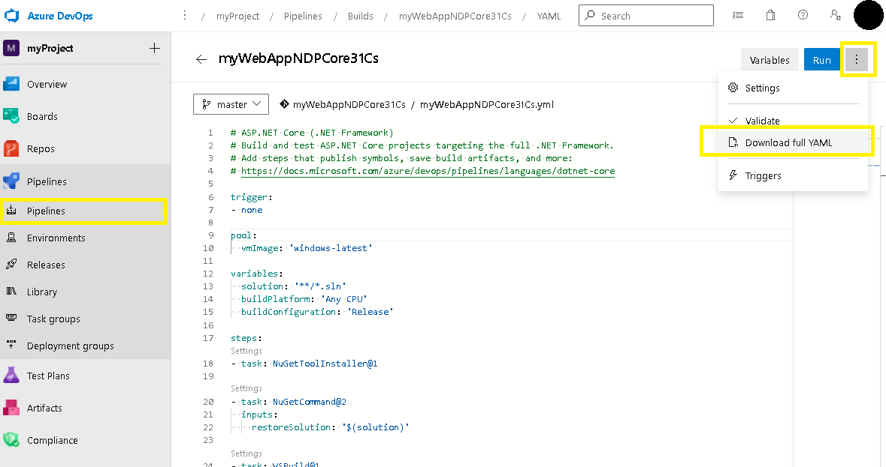
Build Pipeline (Classic 形式)
Azure DevOps Services の対象 Organization にサインイン -> 対象の Project を選択 -> Project のブレードから [Pipelines\Pipelines] を展開 -> [All] タブから対象のパイプラインを選択してください。
画面右上の詳細メニュー (…) から [Export to JSON] または [Export to YAML] を選択して、ダウンロードしたファイルをご提供ください。
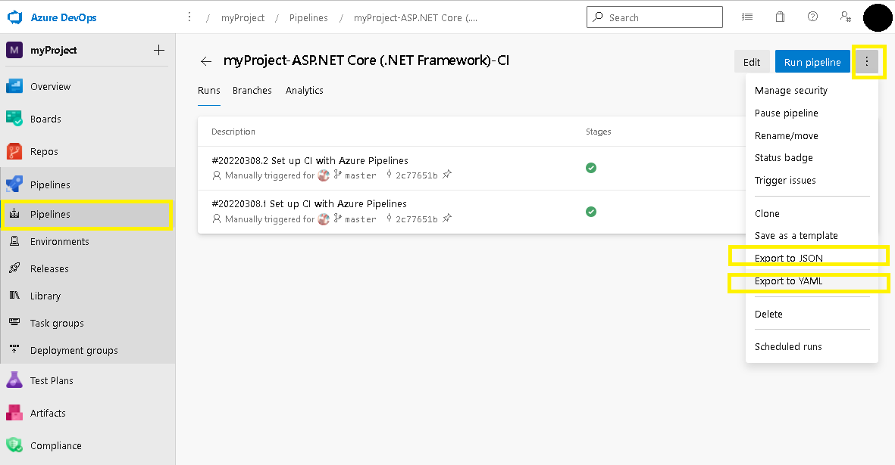
Release Pipeline
Azure DevOps Services の対象 Organization にサインイン -> 対象の Project を選択 -> Project のブレードから [Pipelines\Releases] を展開 -> 対象の Release Pipeline を選択してください。
画面右上の詳細メニュー (…) から [Export] を選択して、ダウンロードしたファイルをご提供ください。下図は「New release pipeline」という名前の Release Pipeline を選択して、ダウンロードする例です。
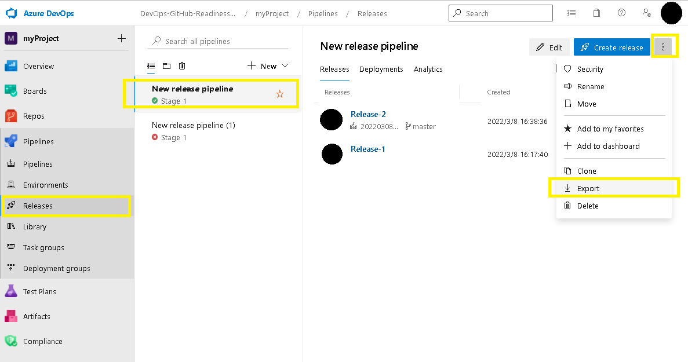
2. Pipeline 実行時の詳細ログ (パイプラインログ)
Pipeline 実行時の詳細ログは、「成功時」と「失敗時」の 2 パターンを採取していただけると、エラーが発生する前後で生じている差異を確認しやすくなります。
お客様にはお手数をおかけいたしますが、是非ご協力いただければと思います！
さて、Pipeline 実行時の詳細ログについても、Pipeline の形式に応じて採取方法が異なります。
以下に、Pipeline の形式ごとに、それぞれ採取手順をご紹介します！
Build Pipeline (YAML 形式)
- Azure DevOps Services の対象 Organization にサインイン -> 対象の Project を選択してください。
※ Pipeline を再実行しても発生したエラーを再現できない場合 (エラーの再現性がない場合) は、ここでステップ 5. へ進んでください。
Project のブレードから [Pipelines\Pipelines] を展開 -> [All] タブから対象の Pipeline を選択 -> 画面右上の [Edit] をクリック -> YAML の編集画面右上の [Variables] をクリック -> [New variable] をクリック -> 下記の変数を入力 -> [OK] をクリックしてください。
Name Value System.Debug true 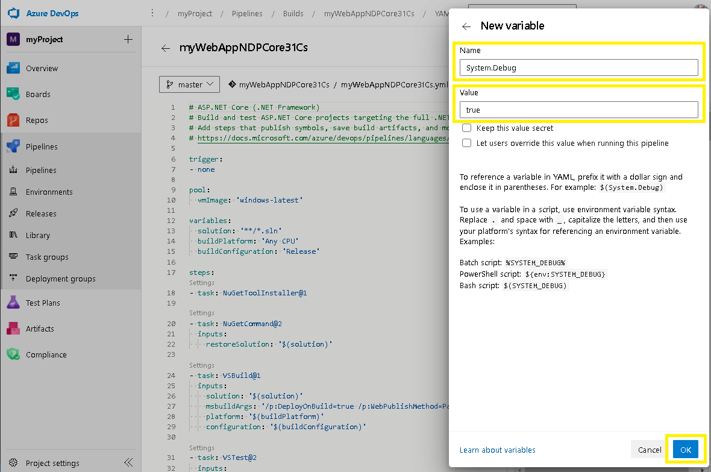 下図のように System.Debug 変数が「= true」に設定されたら [Save] をクリックして保存してください。以降、この Pipeline においては常にデバッグ情報が有効になり、Pipeline 実行時の詳細ログを採取できるようになります。
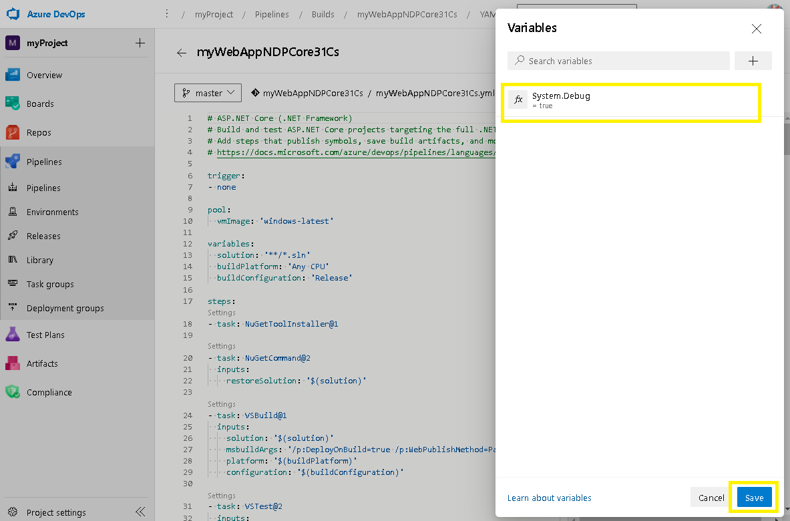
Build Pipeline を再度実行してください。
Project のブレードから [Pipelines\Pipelines] を展開 -> [All] タブから対象の Pipeline を選択 -> 該当する Pipeline の実行結果 (run) を選択してください。
画面右上の詳細メニュー (…) から [Download logs] を選択してダウンロードした ZIP ファイルをご提供ください。下図は「myWebAppNDPCore31Cs」という名前の Pipeline の実行結果「#20220308.2 Set up CI with Azure Pipelines」を選択して、ダウンロードする例です。
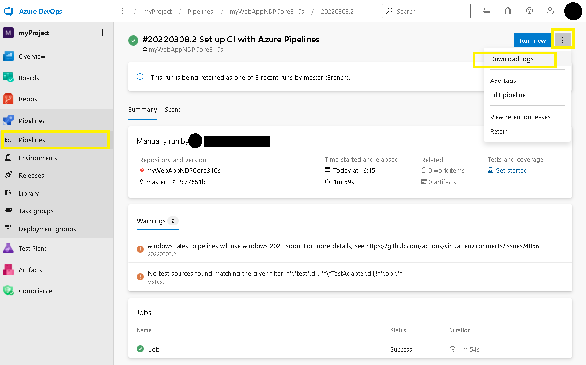
Build Pipeline (Classic 形式)
- Azure DevOps Services の対象 Organization にサインイン -> 対象の Project を選択してください。
※ Pipeline を再実行しても発生したエラーを再現できない場合 (エラーの再現性がない場合) は、ここでステップ 5. へ進んでください。
Project のブレードから [Pipelines\Pipelines] を展開 -> [All] タブから対象の Pipeline を選択 -> 画面右上の [Edit] をクリック -> Pipeline 編集画面の [Variables] タブを選択 -> ブレードから [Pipeline variables] を選択してください。
Name 欄に [System.Debug] 変数が既に存在する場合は、Value を “true” に変更してください。[System.Debug] 変数が存在しない場合は [+ Add] をクリックして、下記のとおり [System.Debug] 変数を追加してください。
Name Value System.Debug true 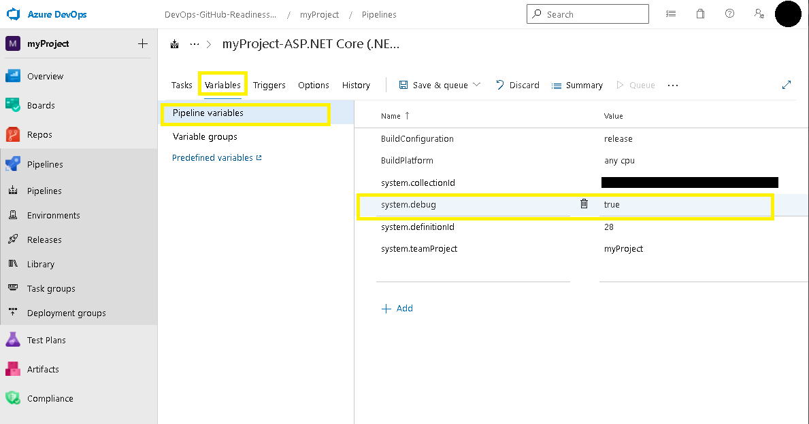 Build Pipeline を再度実行してください。
Project のブレードから [Pipelines\Pipelines] を展開 -> [All] タブから対象の Pipeline を選択 -> 該当する Pipeline の実行結果 (run) を選択してください。
画面右上の詳細メニュー (…) から [Download logs] を選択してダウンロードした ZIP ファイルをご提供ください。下図は「myProject-ASP.NET Core (.NET Framework)-CI」という名前の Pipeline の実行結果「#20220308.1 Set up CI with Azure Pipelines」を選択して、ダウンロードする例です。
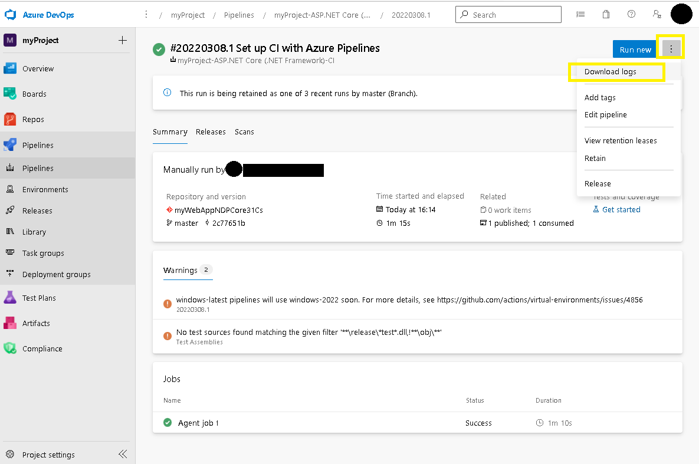
Build Pipeline の [Enable system diagnostics] オプション (YAML／Classic 形式共通)
上述の通り、YAML 形式も Classic 形式も、デバッグ情報を含む詳細ログを取得するためには、System.Debug 変数の編集・追加が必要です。
「少し面倒だなあ」「Pipeline の設定は変更したくないなあ」「エラー自体は再現性はあるし、クイックに詳細ログをゲットしたいなあ」という時にお役立ちなのが、この [Enable system diagnostics] オプションです！
Review logs to diagnose pipeline issues / Configure verbose logs
本オプションは、Pipeline を手動 (Manual) で実行する際に表示される [Run Pipeline] パネルの下部に、[Enable system diagnostics] チェックボックスの形で用意されています。
この [Enable system diagnostics] を ON にして Pipeline を実行すると、その時の実行 (Run) だけに System.Debug 変数が true に設定されますので、Pipeline に対して上述した System.Debug 変数の編集・追加を行う必要がありません。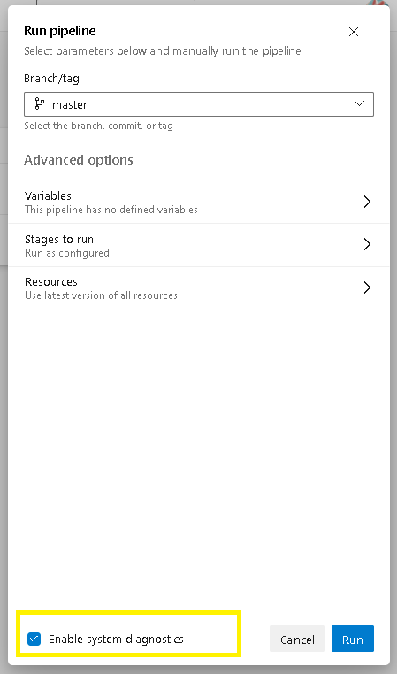
恒久的に詳細ログを採取する計画がある場合は、お手数ですが System.Debug 変数を追加・編集していただき、一時的にワンショットで詳細ログを採取する場合は [Enable system diagnostics] オプションをご利用いただくなど、必要に応じて使い分けていただけたらと思います！
Release Pipeline
- Azure DevOps Services の対象 Organization にサインイン -> 対象の Project を選択してください。
※ Pipeline を再実行しても発生したエラーを再現できない場合 (エラーの再現性がない場合) は、ここでステップ 5. へ進んでください。
Project のブレードから [Pipelines\Releases] を展開 -> 対象の Release Pipeline を選択 -> 画面右上の [Edit] をクリック -> Release Pipeline 編集画面の [Variables] タブを選択 -> ブレードから [Pipeline variables] を選択してください。
Name 欄に [System.Debug] 変数が既に存在する場合は、Value を “true” に変更してください。[System.Debug] 変数が存在しない場合は [+ Add] をクリックして、下記のとおり [System.Debug] 変数を追加してください。
Name Value System.Debug true 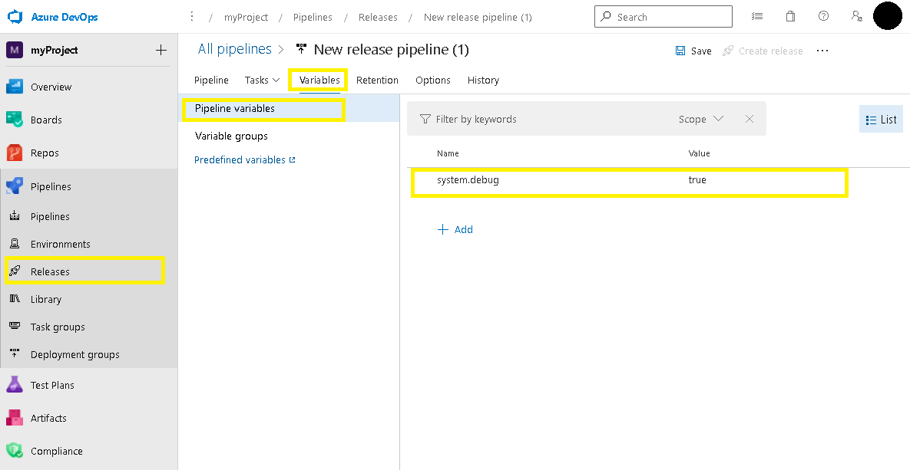
Release Pipeline を再度実行してください。
Project のブレードから [Pipelines\Releases] を展開 -> [All] タブから対象の Release Pipeline を選択 -> 該当する Release を選択 -> 対象の Stage の上にマウスをホバーして [Logs] をクリックしてください。
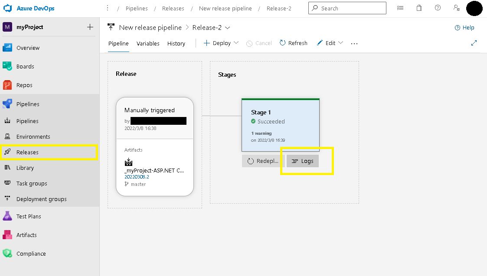
画面右上の [Download all logs] をクリックしてダウンロードしたファイルをご提供ください。下図は「New release pipeline」という名前の Release Pipeline の Release「Release-2」における、Stage「Stage 1」を選択して、ダウンロードする例です。
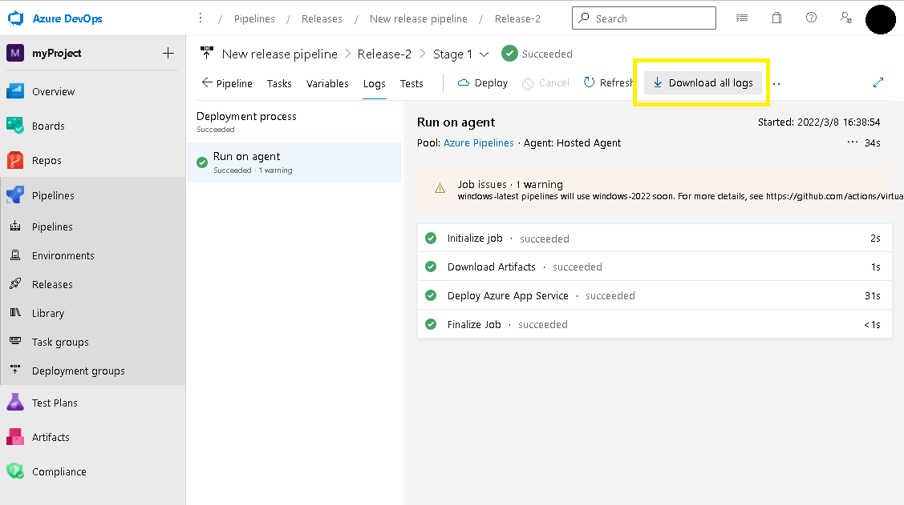
今回は、Azure Pipelines 上でのトラブルシューティングをスムーズにするために有効なデータの採取方法をご紹介しました。
今後も Azure DevOps Services のご利用にお役立ていただける情報を、どんどんご紹介していきたいと思いますので、どうぞよろしくお願いします！
本ブログの内容は弊社の公式見解として保証されるものではなく、開発・運用時の参考情報としてご活用いただくことを目的としています。もし公式な見解が必要な場合は、弊社ドキュメント (https://learn.microsoft.com や https://support.microsoft.com) をご参照いただくか、もしくは私共サポートまでお問い合わせください。